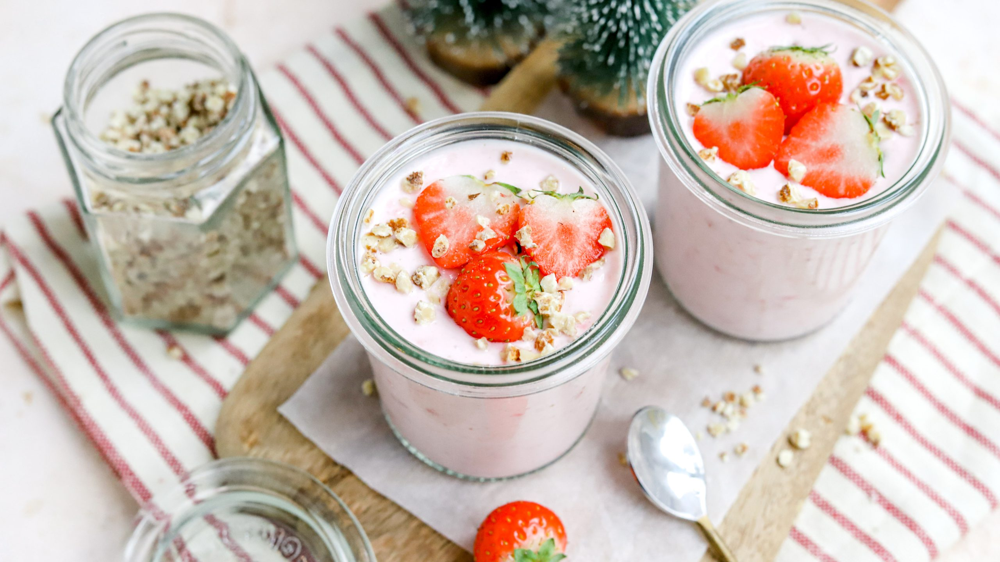

Lactosevrije mousse
Dit Lactosevrije mousse kan prima bij een voorgerecht, maar is ook een makkelijk gerecht voor een tussendoortje.
- 150 ml lactosevrije slagroom
- 1 zakje vanillesuiker
- 150 gram aardbeien
- 2 tenen knoflook
- 2 blaadjes gelatine
- 1 handje hazelnoten
- Paar blaadjes verse munt (optioneel ter garnering)
- Week de gelatine en verwarm deze vervolgens in een pannetje met een heel klein beetje water tot dat de gelatine compleet is opgelost, dan zet je het vuur uit.
- Klop de lactosevrije slagroom helemaal stijf samen met de vanillesuiker.
- Pureer de aardbeien en meng met het gelatine mengsel.
- Meng de aardbeienpuree vervolgebs door de slagroom heen. Verdeel dit vervolgens over 2 glaasjes heen. Je kunt dit het beste erin spuiten met een spuitzak.
- Laat de mousse vervolgens opstijven in de koelkast voor minimaal 2 uur.

Tip zijn de aardbeien niet in het seizoen en daardoor té duur en smaakloos? Diepvries aardbeien zijn ook geschikt. Zorg dat ze helemaal ontdooid zijn en laat ze goed uitlekken zodat ze niet té nat gebruikt worden.